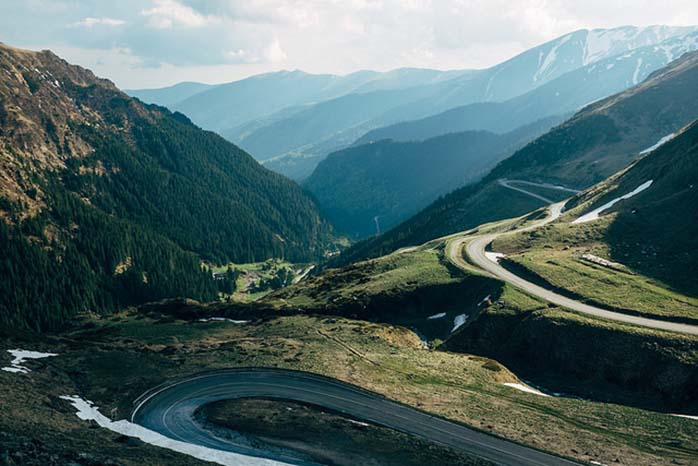
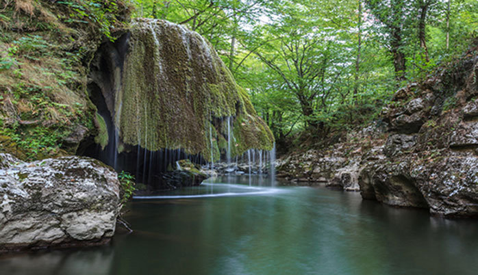
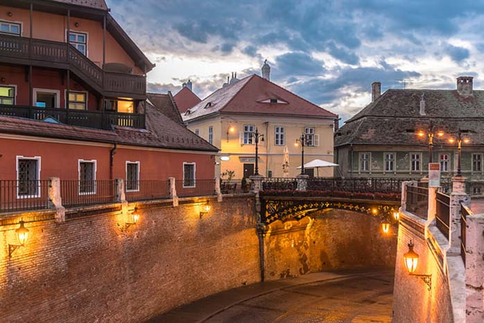
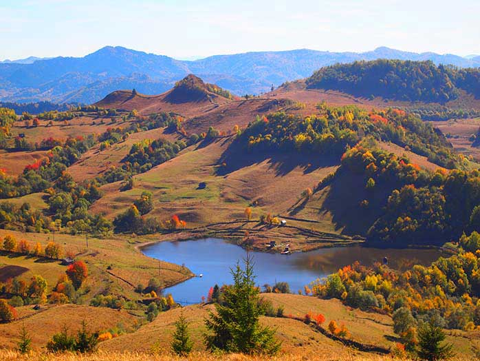

TransfăgărășanCurbele impresionante ale Transfăgărășeanului, idealul oricărui șofer, i-au dus vestea acestui șerpuitor departe de granițele românești. Poate datorită curajului său de a înfrunta fără teamă înalții Munți ai Făgărașului și a uni Muntenia cu Transilvania. Este un drum sălbatic, în ciuda cuceririi de către om, unde forma muntoasă abruptă se îmbină armonios cu șoseaua, iar valea propune peisaje de rămas în suflet. Muntele aleargă la vale, însă tu te poți opri seren pe marginea drumului pentru a admira plenitudinea. Și aerul dulce de munte.
|
 |
|  |
Cascada Bigăr, județul Caraș-SeverinLa terminarea celei de-a șasea zi, imediat după facerea lumii și înainte de a se bucura de binemerită zi de odihnă, Creatorul și-a amintit de săculețul lui cu minuni. L-a luat cu grijă de pe un raft prăfuit, a scos dinăuntru un pumn și a presărat cu grijă conținutul din loc în loc, pe toată suprafața lumii. Una dintre acestea a nimerit la un pas de Paralela 45, în județul Caraș-Severin, iar oamenii au numit-o Cascada Bigăr. Se aude că, milioane de ani mai târziu, prin 2013, cascada ar fi ajuns pe locul I într-un oarecare top internațional al cascadelor unice în lume, dar ăsta este doar un zvon. Se mai spune că albastrul izvorului te face să crezi că acolo a căzut cerul, iar curgerea de apă peste stânca acoperită de mușchi pare un voal de mireasă. Dar nu trebuie să iei nimic de-a bună fără să vezi cu ochii tăi. |
SibiuPoate că la nasul turistic al Sibiului nu mai ajungi cu una cu două de când a fost declarat capitală europeană, dar cine a fost acolo știe că motive sunt pentru ambele (și pentru titlul ce i se dat, și pentru ridicarea nasului). Totul pare minimalist, modest, dar în același timp de o finețe grăitoare, iar frumoasele sale străzile pietruite se încăpățânează să evoce cu orice preț perioada dominării habsburgice, E ceva în aerul sibian care păstrează istoria tumultoasă și, în ciuda liniștii, pare că cel mai mic strănut ar putea dezlănțui furtuna. |
 |
|  |
Roșia Montană, județul AlbaCum? Ce spui? Ai susținut, fie și numai cu gândul, protestul din 2013, dar nu ai ajuns încă să vizitezi Roșia Montană? Află atunci că salvarea Roșiei Montane nu s-a oprit o dată cu nominalizarea acesteia pentru Lista Patrimoniului Mondial UNESCO și încetarea exploatării aurului. Ca urmare a acestui lucru, în prezent, zona se află în declin economic, iar locuitorii acesteia duc o luptă grea pentru dezvoltarea altor industrii locale care să le asigure traiul. Ca să nu mai vorbim despre dezbinarea comunității locale care a survenit în urma evenimentelor din 2013. |
Poate te intereseaza urmatoarele țări: